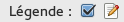
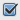
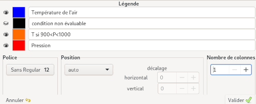
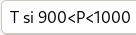

: la ligne apparaît dans la légende.
: la ligne n'apparaît pas dans la légende.
 : couleur associée (non modifiable).
: couleur associée (non modifiable).Configurer la légende


: affiche une légende sur le graphique si la case est cochée.
Légende :
par défaut, la légende contient une ligne par donnée tracée. Si un affichage conditionnel a été défini sur un tracé une ligne est ajoutée pour chaque condition.
: la ligne apparaît dans la légende.
: la ligne n'apparaît pas dans la légende.
: couleur associée (non modifiable).

: texte modifiable.Police : Le choix de la police va définir la taille de la légende.
Position :
Un menu déroulant permet de positionner la légende dans le graphique.
La position auto va positionner la légende au mieux à l'intérieur du graphique, afin qu'elle masque le moins possible celui-ci. Pour tous les autres choix, on peut définir un décalage vertical et horizontal par rapport à la position sélectionnée. Ce décalage est compris entre -100 et 100. 100 représente respectivement la hauteur et la largeur du graphique.
Noter : en utilisant le décalage il est possible de positionner la légende à l'extérieur du graphique.
Nombre de colonnes : Le nombre de colonnes sur lequel la légende s'affiche.